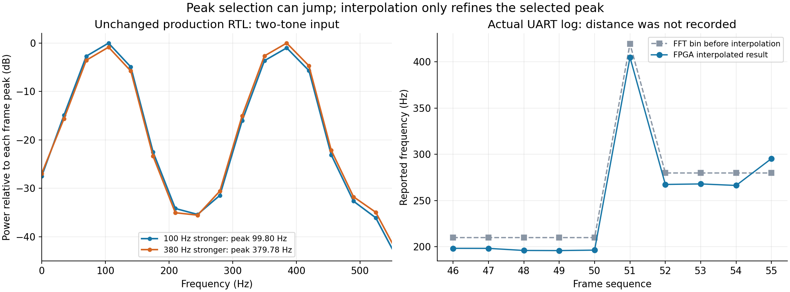
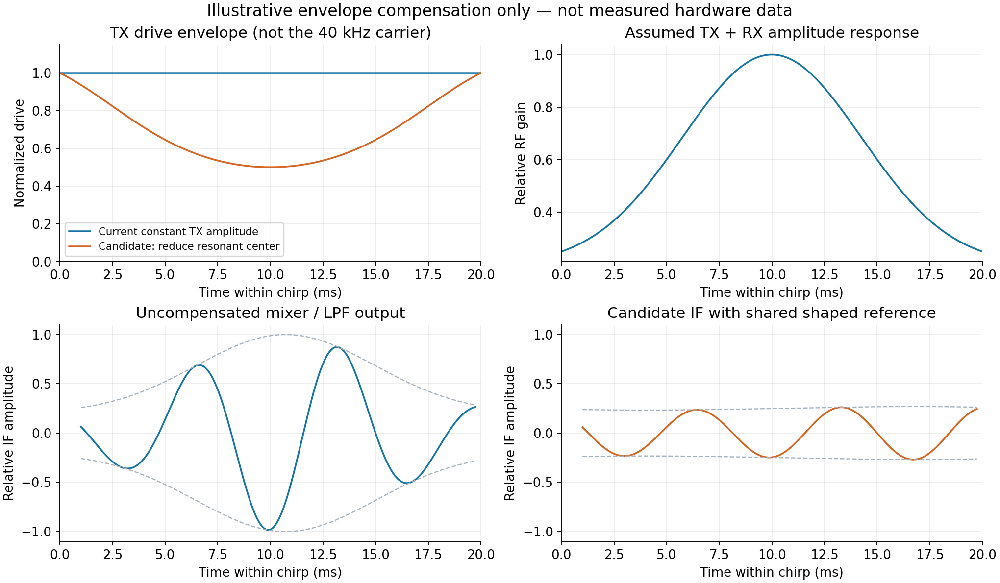

声学链路与频率突跃核查
2026-10-20 · 当前 Main 短窗版 · 40 kHz 中心 / 4 kHz 带宽 / 20 ms TX / 幅度 0.25
距离已更正为 5、7.5、12.5 cm，指探头到反射面的距离。
此前按毫米得出的“理想拍频低于搜索范围”不适用于这次情况。探头型号和 TX/RX 中心间距仍未知。
1. 备份与 Git 核查
已建立 E:\Document_HH\Course\26FA\450code\15_UsMimoTestBench_backup_20261020，包含 366 个文件、
60.3 MiB，逐文件 SHA-256 校验。保存当前源码、板卡设计、配置、文档、验证结果、
当前 SOF/EXE 和两份运行时峰值日志；排除 Git 数据库、可重建编译缓存和大型历史归档。original 目录未修改。
核查时，本地 HEAD 与 GitHub 私有仓库 450SourceOri
的 main 均为 3ee6a8282ae6aaa0b73db41b842865f610f0cf4d。关键 RTL、上位机源码、短窗与插值报告及
WORKFLOW_Demo.drawio 均逐文件匹配远端；只有 readme_2026-10-20.md 的最后一次 workflow 核对追加尚未提交。
本报告保存的是核查时基线；本次交付后的提交可在
仓库提交记录查看。
备份并非整个目录的磁盘镜像；排除项见 备份清单摘要。
完整逐文件清单在备份目录 BACKUP_MANIFEST.json。Git 逐项核查。
2. 厘米距离对应什么拍频？
在共点收发、正对平面反射、无额外系统延迟的近似下：S = B/T = 200000 Hz/s，
f_b = S × 2R/c，取 c = 343 m/s。分置 TX/RX 时应使用真实总声程
L_TX + L_RX；例如对称平面反射时总路程为 2√(R²+(d/2)²)，d 为中心间距。
| 反射面距离 | 理想拍频 / Hz | 纯正弦输入 RTL / Hz | 误差 / Hz | 当前窗内周期数 |
|---|
| 5 cm | 58.309 | 56.650 | -1.659 | 1.09 |
| 7.5 cm | 87.464 | 86.165 | -1.298 | 1.64 |
| 12.5 cm | 145.773 | 146.303 | +0.531 | 2.74 |
表中 RTL 列使用理想拍频的纯正弦作为 ADC 数字输入，没有模拟声学传播或真实换能器。
三点都在当前名义 25–500 Hz 搜索范围内；窗长只有 18.767 ms，仍只有约 1–3 个低频周期，
因此这三次结果不能推广为任意相位、噪声、包络下的误差保证。
3. 跳变发生在插值之前
当前 FFT 算术、功率、峰值与插值的受控 RTL 测试通过；已有实板日志的跳变同时伴随原始 FFT 峰值格改变。
证据更支持“选到不同的峰”作为直接机制，尚不足以确定造成竞争峰的具体声学/模拟电路原因。
当前链路：CIC /32 → 整帧均值移除 → Kaiser β=4 → 1024 点 FFT（672 有效点+补零）→
Re²+Im² → 第 1–14 格中取最大功率 → 三点对数功率抛物线插值 → UART。
它没有多峰身份识别、谐波排除、跨帧追踪或自动距离换算。频域的 Re²+Im² 不等于把时域信号平方，本身不会把输入频率翻倍。
频点间隔 34.968058 Hz；插值限幅 ±0.5 格，即最多 ±17.484029 Hz。
上位机使用 FPGA 返回的格号、Q16 偏移与 FFT 长度计算显示值，并校验偏移范围。
因此同一格的插值不能独自造成 100 → 380 Hz 的跳变。
| 实际 UART 帧 | 原始格号 | 插值前 / Hz | 插值后 / Hz | 状态 |
|---|
| 17:05:58，seq 50 | 6 | 209.808 | 196.254 | OK |
| 17:05:59，seq 51 | 12 | 419.617 | 404.998 | OK |
第二份日志有 1576 帧，其中 20 次相邻输出变化超过 150 Hz，全部伴随格号变化；
1543 帧 OK、32 帧 ADC_CLIPPED、1 帧 CENTERING_CLIPPED。第一份日志有 249 帧，
210 帧 OK、39 帧 NO_STRONG_PEAK。日志没有距离标签、原始 ADC 波形和完整功率谱，
不能把上述 seq 50/51 指认为 12.5 cm 的那次现象。OK 也不表示选中的峰就是目标回波。

左图是新对照：100 Hz 与 380 Hz 同时输入，幅度从 7000:6300 交换为 6300:7000、相位固定，
输出便从 99.802 Hz 变为 379.782 Hz。这是正确执行“最大峰”规则，
不是已复现用户实板根因。右图是真实 UART 日志。
测试覆盖实际 Main FFT 分支的 CIC、均值、窗、FFT、功率、峰值、插值和 M3 字节握手；
全量输入采样，压缩采样间空闲周期，使用行为 RAM。逐点 FFT/功率与定点参考一致，M3 校验、连续帧、
削顶标记、短帧/空帧拒绝通过。不是本次重新执行完整 Main 顶层、逐位 UART、Intel RAM、时序或实板声学测试。
检查结果 · 可复现测试源码包（无编译库）。
4. “斜率一样、存在偏移”怎样判断？
若测量一直跟踪同一个物理峰，f_meas ≈ aR+b 很合理。
混频前的换能器/模拟链路群延迟、参考同步偏差以及距离零点可能形成偏移。
混频后的 IF 低通/CIC 固定延迟只改变稳态正弦的相位与时间位置，不能直接按 Sτ 当作拍频偏移。
固定偏移可以解释整条曲线平移，不能单独解释某一点跳到另一条分支。
只作诊断假设：假如 5 cm 测得约 100 Hz、7.5 cm 测得约 130 Hz，同斜率分支到
12.5 cm 会接近 190 Hz；380 Hz 恰好接近其二倍。这使二次谐波成为候选，
但用户未提供这组精确配对数据，不能以此认定谐波。
双探头声程、直达串扰与回波相消、多径以及随时间变化的偏置也都可能改变最大峰。
| 候选原因 | 怎样区分 |
|---|
| 稳定系统偏移 | 同一个峰随距离连续变化；多距离拟合 a、b，再用未参与拟合的位置验证。 |
| 谐波或非线性 | 同帧同时有 f 和约 2f；降低驱动或增益后，高次分量相对下降。未到 ADC 削顶不代表前级绝无线性失真。 |
| 串扰/多径与相消 | 改变目标角度、周边反射物或隔离直达路径后，候选峰强弱改变；检查固定峰与随距离移动峰。 |
| 短窗、包络、时变偏置 | 看 IF 波形的有效周期、均值漂移和起止瞬态；用同一波形离线比较处理结果。 |
工程历史调试记录 调试时的电路更改.txt 曾注明乘法器偏置和若干放大级振荡修正。
这只是排查线索，不意味着这些问题现在仍然存在。当前 FPGA 只移除整帧均值，无法自动消除所有时变基线。
5. 为什么会形成中间高、两边低的包络？
电信号等幅，经过换能器以后不一定等幅。作为典型例子，
Murata MA40S4S/R 应用说明第 8 页
给出了发射声压与接收灵敏度随频率的变化，40 kHz 附近响应更强。用户换能器型号未确认，不能把此曲线当作本板实测。
扫频把频率响应映射到时间上：38 kHz 时较弱 → 40 kHz 附近较强 → 42 kHz 时又变弱，
因此 RX 可能带一个包络。TX 与 RX 两端、反射路径和模拟前端的响应共同作用。
TI SLAA907D 第 2 节
也讨论了谐振、增益饱和以及分置收发探头的几何校准。
简化模型：RX = A(t) cos φ_RX(t)。乘参考并低通后得到
IF ≈ ½ A(t) A_ref(t) cos(2π f_b t + φ_H(t)) + d(t)。
低通去掉和频，并不会自动去掉 A(t) 的包络；相位频响/群延迟变化也可能使拍频不再完全恒定。
对称的正包络本身不必然引起跳峰，但会增加频谱展宽和短窗估计偏差。
6. 已做的补偿尝试：离线模型，不改当前固件

构造中心较强的总射频幅度响应 g(f)，不模拟实际换能器的因果振铃、相位色散、噪声、多径或非线性。
先尝试只压低中心、不提高两端峰值的幅度整形。
若同一条整形后的 TX 也作为混频参考，IF 幅度近似正比于 A_TX²·g，
因此采用 A_TX≈√(g_min/g)；固定等幅独立参考则应另按 g_min/g 设计。
延迟非零时，实际乘积为 A_TX(t−τ)A_TX(t)，不会完全等于平方。
该假设模型中包络最大/最小比从 3.87 降至
1.16，最大相对驱动不超过 1。
这是说明方法有可行性，不是实际硬件性能提升；中心衰减也牺牲信噪比。
必须先测实际复频响并确认 AD835 参考从哪里取得，再决定补偿位置与公式。
Smith 等 2012 年 PDAM 研究摘要
报告了通过逆滤波预整形补偿换能器造成的 chirp 幅度削弱，也表明波形补偿成功不保证后续成像指标同步改善。
它支持尝试“实测后补偿”的方向，不给当前设备提供现成系数。
7. 建议下一步 workflow
固定距离并留原始波形 → 同帧看多个候选峰 → 排除削顶/谐波/串扰 → 校准稳定分支 →
实测频响并离线验证补偿 → 再决定 FPGA 修改
- 固定现有 TX 参数，在 5 / 7.5 / 10 / 12.5 / 15 cm 各采集多帧；
记录距离定义、探头间距、角度、增益、温度和时间。先不要用一个偏移量强行修正所有跳变。
- 示波器分段保存同次 chirp：TX 参考、混频前 RX、混频后 IF。
两通道仪器可在目标固定时分两次采；不同次记录不能冒充同步。观察包络、削顶、起止振铃、IF 周期和基线。
差分 TX 的负端不是地，需正确差分测量。
- 导出完整 IF 波形/频谱，并看前三个局部峰、原始格号、插值、峰间功率差和状态。
当前 M3 仅报告一个峰；可先用现有上位机波形导出做离线分析。该波形是原始 ADC /4，
并非 FFT 实际使用的 CIC /32 的 672 点，不能直接宣称两者逐点等同。
- 控制变量排查：保持距离，适度降低现有驱动/接收增益检查谐波；改变目标角度/邻近反射物检查多径；
留无发射基线。跨帧追踪只能作为未来候选功能，不能用平滑把真实错误隐藏掉。
- 校准稳定分支，拟合频率对距离的斜率与截距，并在独立位置验证。
“最大频率峰”不是“最近目标”，最大功率峰也不天然等于目标回波。
- 频响标定：在允许的驱动范围内，分次发等幅窄带/固定频率 burst（例如带宽 0，中心从 38 到 42 kHz），
在稳态片段测 RX 幅度及相对相位；这一步看射频 RX，不用 Main 的 25–500 Hz 峰值当频响。
避免对深陷波做无界放大；优先离线比较限幅补偿与保留包络的模型拟合。
也不要简单把 20 ms 改长并指望 FMCW 周期数必然增加：在固定带宽和距离、同步延长 chirp 时，
f_b T = Bτ 近似不变。这与连续固定频率信号发生器的长时间采样不同。
Laureti 等 2022 §3.4
讨论了低拍频有限周期的限制与移位参考方案；移位参考属于另一个需要重新标定、验证的架构，不是当前 Main 已有功能。
打开可编辑 workflow · 厘米理论值 / RTL 表 ·
真实跳变明细 · 包络示意原始数据 ·
复算和绘图脚本
本次没有修改生产 RTL、上位机、SOF、原有 draw.io 或 original 备份。
确认了测试条件下的算术正确性，识别了单峰选择的局限；12.5 cm 突跃的实际声学根因仍需带距离标签的同帧波形/频谱证实。